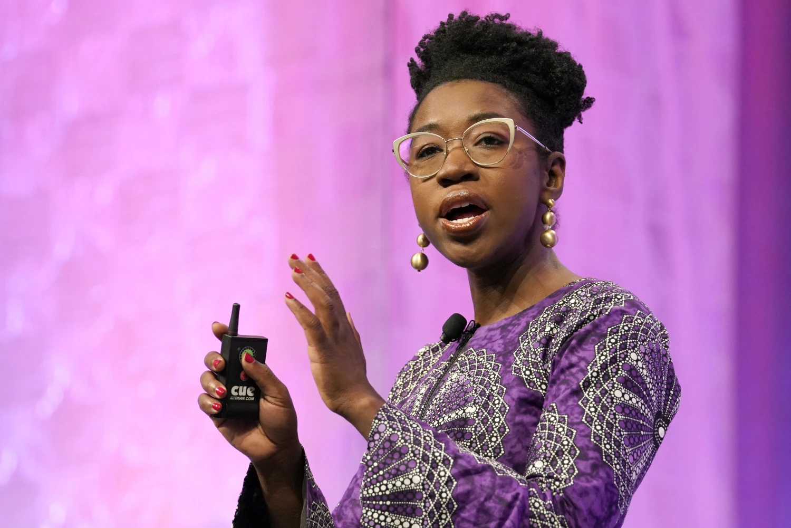

Leaders Advancing Equity in Tech
This page highlights individuals working to make technology more equitable and inclusive.
Explore short profiles and follow the links to learn more.
Learn the Concepts
Meet the Team
Tech Heroes
Becky George-David
Executive Director of Product, JP Morgan Chase & Co.

Becky George-David is changing the norms in the tech space, where she leads Product Development for JP Morgan Chase’s first digital banking initiative outside of the U.S.
After graduating in 2013 with a degree in Computing from the University of East London, she worked at NatWest Markets and Group.
After four years with NatWest, she joined JP Morgan Chase while pursuing her Master’s in Business at Imperial Business School.
George-David also co-leads JP Morgan’s Black Employee Network across the EMEA region and was a finalist for the 2022 Black British Business Awards.
To learn more about George-David’s impact in the tech space, check out the links below:
Joy Buolamwini
Founder, Algorithmic Justice League

Joy Buolamwini is a computer scientist and digital activist focused on uncovering algorithmic bias.
As the founder of the Algorithmic Justice League, she leads advocacy for ethical and transparent AI systems.
Her research at the MIT Media Lab revealed racial and gender bias in facial recognition systems,
sparking global awareness about fairness and accountability in AI.
Aisha Bowe
Founder & CEO, STEMBoard | Former NASA Aerospace Engineer

Aisha Bowe is an aerospace engineer and entrepreneur dedicated to increasing representation in STEM and technology.
As the founder and CEO of STEMBoard,
she leads innovative engineering and data-driven projects for U.S. government agencies while creating pathways for underrepresented youth through her education program Lingo.
In 2024 she became the 6th Black woman ever to go to space via Blue Origin, marking a historic milestone for inclusion in aerospace and technology.